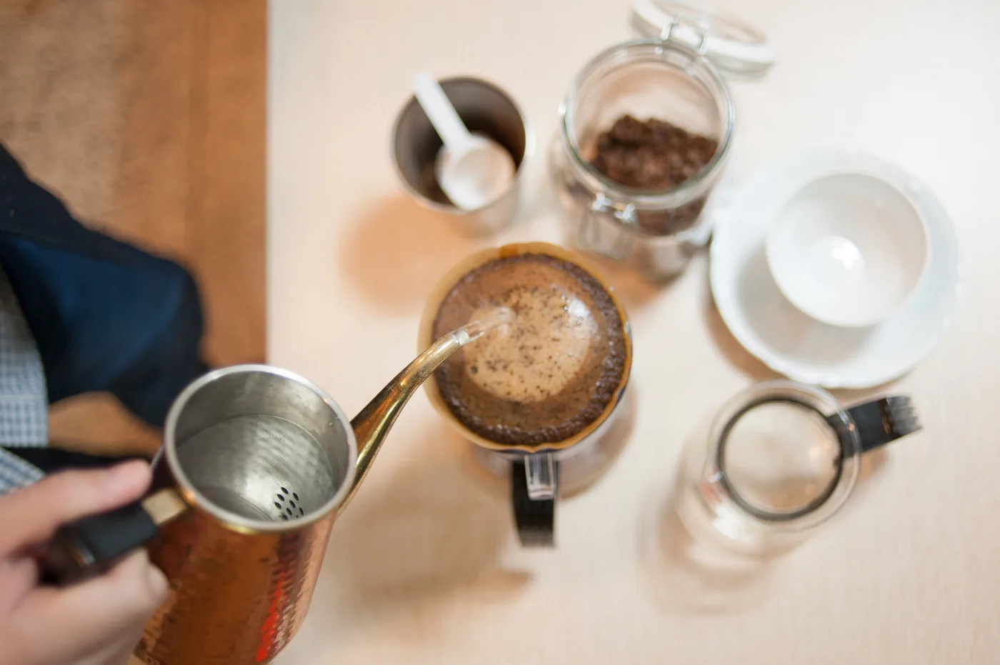
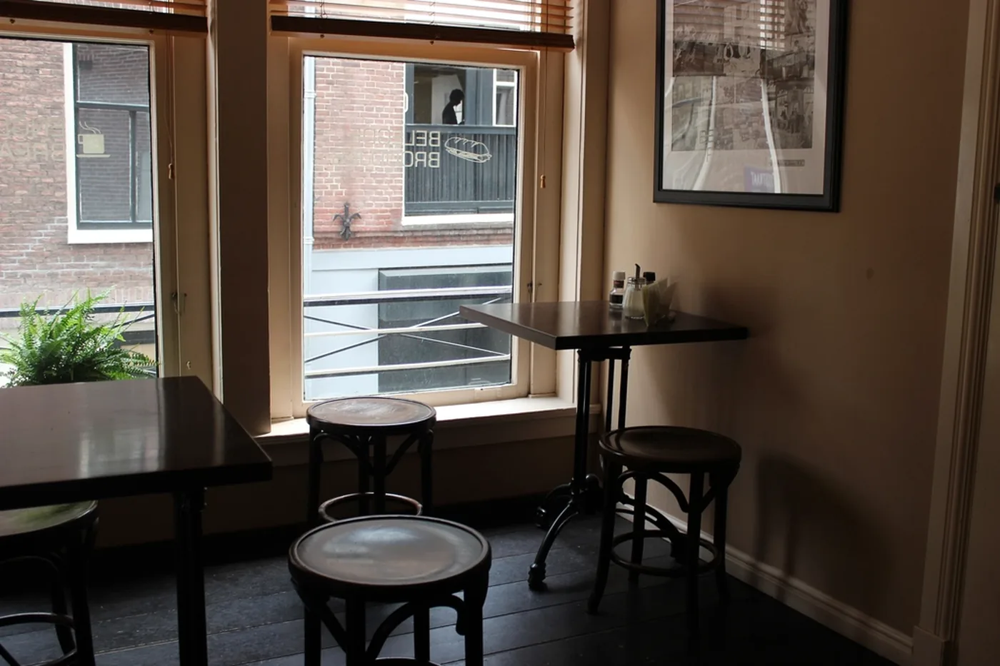
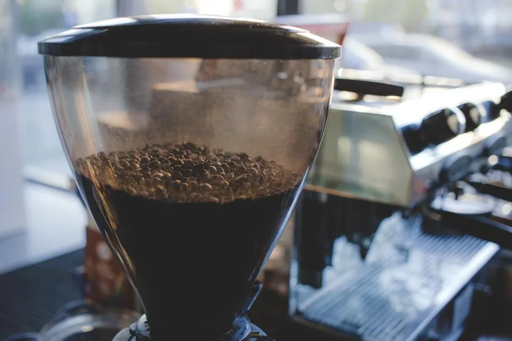

No. 01
朝霧ブレンド
エチオピア イルガチェフェ ／ グアテマラ ウエウエテナンゴ
店名を冠した定番。柑橘の軽やかさと、後から来る黒糖のような甘さ。 朝いちばんの一杯を想定して、冷めても輪郭が崩れないように組んでいます。
焙煎度中煎り
¥1,480 ／ 200g
朝の霧が晴れるまで
長野県松本市、女鳥羽川のほとり。
週に二度だけ火を入れる小さな焙煎所と、
十二席の喫茶店です。
About
松本の朝は、よく霧が出ます。女鳥羽川から立ちのぼった霧が、街を白くつつんで、 八時を過ぎるころにゆっくりと晴れていく。朝霧は、その時間のための店です。
豆は火曜と金曜、店の奥の小さな焙煎機で焼いています。一度に焼けるのは三キロまで。 少ないぶん、その週の湿度と気温に合わせて、火の入れ方を毎回変えられます。 同じ「朝霧ブレンド」でも、六月と十一月では別の顔をしています。 それを欠点ではなく、その季節の味として出しています。
席は十二。豆を挽く音と、川の音のほかは、あまり何も置いていません。 お急ぎのときには向かない店です。かわりに、一杯を飲み終わるまでの時間だけは、 きちんとお守りします。
店主 髙野 亮Ryo Takano — Roaster

Beans
常時お出ししているのは三種類だけです。いずれも200gからの量り売り、 お渡しは焙煎日から三日以内のものに限っています。
No. 01
エチオピア イルガチェフェ ／ グアテマラ ウエウエテナンゴ
店名を冠した定番。柑橘の軽やかさと、後から来る黒糖のような甘さ。 朝いちばんの一杯を想定して、冷めても輪郭が崩れないように組んでいます。
焙煎度中煎り
¥1,480 ／ 200g
No. 02
インドネシア マンデリン リントン
冬のあいだ最もよく出る深煎り。苦味を立てるのではなく、 土のような重さとカカオの後味を残すところで火を止めています。牛乳にも負けません。
焙煎度深煎り
¥1,620 ／ 200g
No. 03
ケニア ニエリ ／ 単一農園
浅煎り。トマトを思わせる酸と、冷めるにつれて出てくるベリーの香り。 好みが分かれる豆なので、店では必ず試飲をおすすめしています。
焙煎度浅煎り
¥1,780 ／ 200g
Shop

